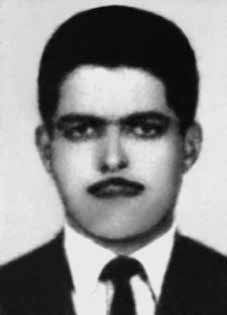

Devanir
José
de Carvalho
BIOGRAFIA
Devanir José de Carvalho era operário, sindicalista e militante do Movimento Revolucionário Tiradentes (MRT), grupo que defendia a ação armada contra a ditadura. Ainda jovem, participou de greves na região do ABC paulista, onde trabalhava e teve seus primeiros contatos com a política. Em 1967, juntou-se à Ala Vermelha, dissidência do Partido Comunista do Brasil (PCdoB). Em 1969, deixou essa organização para fundar o MRT.
Recebeu treinamento para guerrilha na China, além de participar de inúmeras incursões contra o Estado. Esteve envolvido no sequestro do cônsul-geral do Japão em São Paulo (SP), Nobuo Okuchi, em março de 1970, quando cinco prisioneiros políticos e três crianças foram trocados pelo diplomata.
Tinha 28 anos, no dia 5 de abril de 1971, quando foi sequestrado no bairro do Tremembé, em São Paulo (SP), e levado ao Departamento Estadual de Ordem Política e Social (Deops). Lá, foi torturado pelo delegado Sérgio Fleury e sua equipe, até que dois dias depois morreu em decorrência das violações sofridas. Os nomes do capitão Ênio Pimentel Silveira e de outros agentes policiais aparecem com participação ativa em sua morte. Acredita-se na possibilidade de o delito ter sido supervisionada por Claris Rowney Halliwell, cônsul dos EUA em São Paulo na ocasião.
No laudo de sua necropsia, assinado pelos legistas João Pagenotto e Abeylard de Queiroz Orsini, constava que Devanir teria sido morto em tiroteio com a polícia, no próprio dia 5 de abril, quando foi levado ao Deops. Nunca foram encontradas as fotos que comprovassem tal versão. Em 29 de fevereiro de 1996, a Comissão Especial sobre Mortos e Desaparecidos Políticos (CEMDP), declarou que ele havia morrido em decorrência de tortura.
Seus restos mortais não foram recuperados, já que familiares foram ao exílio para escapar da repressão. Há dúvidas se o corpo de Devanir teria sido sepultado no Cemitério da Vila Formosa ou em alguma vala clandestina do Cemitério de Perus, ambos em São Paulo (SP).
Hoje, em sua homenagem, levam o nome de Devanir uma escola pública estadual, no município de Diadema (SP), região do ABC, onde iniciou a sua trajetória política, e uma rua no bairro das Indústrias em Belo Horizonte (MG), capital do estado onde nasceu.
Devanir José de Carvalho was a worker, trade unionist and militant of the Tiradentes Revolutionary Movement (MRT), a group that defended armed action against the dictatorship. As a young man, he participated in strikes in the ABC region of São Paulo, where he worked and had his first contacts with politics. In 1967, he joined the Red Wing, a dissent from the Communist Party of Brazil (PCdoB). In 1969, he left that organization to found the MRT.
He received guerrilla training in China, in addition to participating in numerous raids against the State. He was involved in the kidnapping of the Consul General of Japan in São Paulo (SP), Nobuo Okuchi, in March 1970, when five political prisoners and three children were exchanged for the diplomat.
He was 28 years old, on April 5, 1971, when he was kidnapped in the Tremembé neighborhood, in São Paulo (SP), and taken to the State Department of Political and Social Order (Deops). There, he was tortured by police chief Sérgio Fleury and his team, until two days later he died as a result of the violations suffered. The names of Captain Ênio Pimentel Silveira and other police officers appear with active participation in his death. It is believed that the crime may have been supervised by Claris Rowney Halliwell, US consul in São Paulo at the time.
In his autopsy report, signed by coroners João Pagenotto and Abeylard de Queiroz Orsini, it was stated that Devanir had been killed in a shootout with the police, on April 5th, when he was taken to Deops. Photos proving this version were never found. On February 29, 1996, the Special Commission on Political Deaths and Disappearances (CEMDP) declared that he had died as a result of torture.
His remains were not recovered, as family members went into exile to escape repression. There are doubts as to whether Devanir's body would have been buried in the Vila Formosa Cemetery or in some clandestine grave in the Perus Cemetery, both in São Paulo (SP).
Today, in his honor, a state public school is named after Devanir, in the municipality of Diadema (SP), ABC region, where he began his political career, and a street in the Indústrias neighborhood in Belo Horizonte (MG), capital of the state where he was born.
Devanir José de Carvalho fue un trabajador, sindicalista y militante del Movimiento Revolucionario Tiradentes (MRT), grupo que defendía la acción armada contra la dictadura. De joven participó en huelgas en la región ABC de São Paulo, donde trabajó y tuvo sus primeros contactos con la política. En 1967 se unió al Ala Roja, una disidencia del Partido Comunista de Brasil (PCdoB). En 1969 abandonó esa organización para fundar el MRT.
Recibió entrenamiento guerrillero en China, además de participar en numerosas redadas contra el Estado. Estuvo involucrado en el secuestro del cónsul general de Japón en São Paulo (SP), Nobuo Okuchi, en marzo de 1970, cuando cinco presos políticos y tres niños fueron canjeados por el diplomático.
Tenía 28 años, el 5 de abril de 1971, cuando fue secuestrado en el barrio de Tremembé, en São Paulo (SP), y llevado al Departamento de Estado de Orden Político y Social (Deops). Allí fue torturado por el jefe de policía Sérgio Fleury y su equipo, hasta que dos días después murió a consecuencia de las violaciones sufridas. Aparecen los nombres del capitán Ênio Pimentel Silveira y otros policías con participación activa en su muerte. Se cree que el crimen pudo haber sido supervisado por Claris Rowney Halliwell, entonces cónsul de Estados Unidos en São Paulo.
En el informe de la autopsia, firmado por los forenses João Pagenotto y Abeylard de Queiroz Orsini, se afirma que Devanir fue asesinado en un tiroteo con la policía, el 5 de abril, cuando era trasladado al Deops. Nunca se encontraron fotos que prueben esta versión. El 29 de febrero de 1996 la Comisión Especial sobre Muertes y Desapariciones Políticas (CEMDP) declaró que había muerto como consecuencia de torturas.
Sus restos no fueron recuperados, ya que sus familiares se exiliaron para escapar de la represión. Hay dudas sobre si el cuerpo de Devanir habría sido enterrado en el Cementerio de Vila Formosa o en alguna fosa clandestina en el Cementerio de Perus, ambos en São Paulo (SP).
Hoy, en su honor, lleva el nombre de Devanir una escuela pública estatal, en el municipio de Diadema (SP), región ABC, donde inició su carrera política, y una calle del barrio Industrias, en Belo Horizonte (MG), capital del estado donde nació.
CIRCUNSTÂNCIAS DA MORTE
A versão oficial para a morte de Devanir indica que ele teria morrido em confronto com forças policiais, por volta das 10 horas na rua Cruzeiro, número 1111, bairro de Tremembé, São Paulo (SP). Os policiais do DOPS-SP teriam chegado ao endereço que abrigava um aparelho do MRT no dia 5 de abril de 1971, engajando-se em confronto armado com Devanir, que teria resistido à prisão. O laudo necroscópico produzido pelos legistas do Instituto Médico-Legal de São Paulo (IML/SP) confirma a versão apresentada pela polícia, de que Devanir teria morrido em tiroteio no dia 5de abril de 1971, especificando que sua morte teria sido decorrente “de hemorragia traumática externa e interna por disparos de arma de fogo”. Versão diferente da oficial fora enunciada por Ivan Seixas, militante do MRT, preso no dia 16 de abril de 1971. Em depoimento anexado ao processo de reparação movido pela família de Carvalho junto à CEMDP, Seixas afirma que foi com outros companheiros ao endereço da rua Cruzeiro no dia seguinte ao tiroteio o que, segundo a versão oficial, teria resultado na morte de Devanir. Complementou dizendo que moradores da região testemunharam a prisão de um homem ferido, cuja descrição física seria compatível com a de Devanir. Ainda, de acordo com Seixas, logo nos dias seguintes ao tiroteio e à subsequente prisão, lideranças do MRT teriam recebido relatos de prisioneiros de que Devanir teria morrido no dia 7 de abril de 1971, após dois dias de tortura sob custódia do delegado Sérgio Fleury. Seixas lembra, por fim, que, em sua passagem pelo CODI e, posteriormente, pelo DOPS-SP, ouviu, diversas vezes, os guardas e torturadores afirmando que “Henrique” teria sofrido dois dias nas mãos de Fleury, sem ter revelado qualquer informação antes de morrer. Em documento elaborado pelo Centro de Informações do Exército (CIE), do Ministério do Exército, Devanir teria morrido no dia 7 de abril de 1971, em São Paulo. iii A despeito de sua certidão de óbito, expedida em 20 de outubro de 1995, indicar como local de sepultamento o cemitério de Perus, efetivamente, o corpo de Devanir José de Carvalho fora enterrado no cemitério de Vila Formosa, conforme registra requisição de exame do IML-SP.
The official version of Devanir's death indicates that he died in a confrontation with police forces, around 10 am on Rua Cruzeiro, number 1111, Tremembé neighborhood, São Paulo (SP). The DOPS-SP police officers arrived at the address that housed an MRT device on April 5, 1971, engaging in an armed confrontation with Devanir, who allegedly resisted arrest. The necroscopic report produced by the coroners at the Instituto Médico-Legal de São Paulo (IML/SP) confirms the version presented by the police, that Devanir died in a shootout on April 5, 1971, specifying that his death was due to “external and internal traumatic hemorrhage caused by gunshots”. A different version from the official one was expressed by Ivan Seixas, an MRT activist, arrested on April 16, 1971. In a statement attached to the reparation process filed by Carvalho's family with the CEMDP, Seixas states that he went with other companions to the Rua Cruzeiro address the day after the shooting which, according to the official version, would have resulted in Devanir's death. He added that residents of the region witnessed the arrest of an injured man, whose physical description would be compatible with that of Devanir. Furthermore, according to Seixas, in the days following the shooting and subsequent arrest, MRT leaders received reports from prisoners that Devanir had died on April 7, 1971, after two days of torture in the custody of police chief Sérgio Fleury. Seixas remembers, finally, that, during his time at CODI and, later, at DOPS-SP, he heard, several times, the guards and torturers stating that “Henrique” had suffered two days at the hands of Fleury, without having revealed any information before dying. In a document prepared by the Army Information Center (CIE), of the Ministry of the Army, Devanir died on April 7, 1971, in São Paulo. iii Despite his death certificate, issued on October 20, 1995, indicating the Perus cemetery as the burial place, in fact, the body of Devanir José de Carvalho was buried in the Vila Formosa cemetery, as recorded in the IML-SP examination request.
La versión oficial sobre la muerte de Devanir indica que murió en un enfrentamiento con fuerzas policiales, alrededor de las 10 horas, en la Rua Cruzeiro, número 1111, barrio de Tremembé, São Paulo (SP). Los agentes de policía del DOPS-SP llegaron a la dirección que albergaba un dispositivo MRT el 5 de abril de 1971, entablando un enfrentamiento armado con Devanir, quien supuestamente se resistió al arresto. El informe necroscópico elaborado por los forenses del Instituto Médico-Legal de São Paulo (IML/SP) confirma la versión presentada por la policía, según la cual Devanir murió en un tiroteo el 5 de abril de 1971, precisando que su muerte se debió a “una hemorragia traumática externa e interna provocada por disparos”. Una versión distinta a la oficial fue expresada por Ivan Seixas, activista del MRT, detenido el 16 de abril de 1971. En una declaración adjunta al proceso de reparación presentado por la familia de Carvalho ante el CEMDP, Seixas afirma que fue con otros compañeros al domicilio de Rua Cruzeiro al día siguiente del tiroteo que, según la versión oficial, habría resultado en la muerte de Devanir. Añadió que vecinos de la región presenciaron la detención de un hombre herido, cuya descripción física sería compatible con la de Devanir. Además, según Seixas, en los días posteriores al tiroteo y posterior arresto, los dirigentes del MRT recibieron informes de los prisioneros de que Devanir había muerto el 7 de abril de 1971, después de dos días de tortura bajo custodia del jefe de policía Sérgio Fleury. Seixas recuerda, finalmente, que, durante su estancia en el CODI y, posteriormente, en el DOPS-SP, escuchó, varias veces, a guardias y torturadores afirmar que “Henrique” había sufrido dos días a manos de Fleury, sin haber revelado ninguna información antes de morir. En un documento elaborado por el Centro de Información del Ejército (CIE), del Ministerio del Ejército, Devanir murió el 7 de abril de 1971, en São Paulo. iii A pesar de su certificado de defunción, emitido el 20 de octubre de 1995, que indicaba como lugar de sepultura el cementerio de Perus, en efecto, el cuerpo de Devanir José de Carvalho fue sepultado en el cementerio de Vila Formosa, según consta en la solicitud de examen del IML-SP.